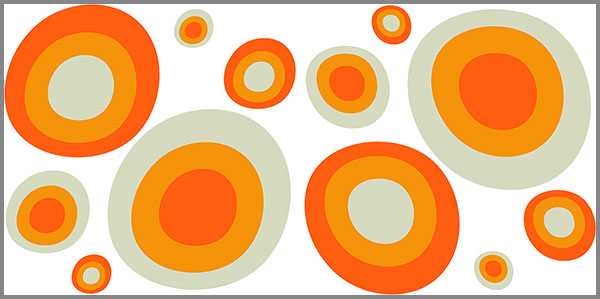

24. Մոռացված Աշխարհի Լուսաբացը Ներքնաշխարհի Հեռուստացույցով
 |
Կյանքը դարձել է մեզ շրջապատող աննկատ տվյալների հոսք։ Հիշողությունները, զգացմունքները, պատկերները՝ բոլորը թափանցիկ պատառիկներ են, որոնք կարող են սքանավորվել՝ տեսանելի դառնալ միայն այն պահին, երբ մենք պատրաստ լինենք նկատել դրանք։ Ներքին աշխարհը վերածվում է վիրտուալ էկրանների, որտեղ անցյալն ու ներկան միաժամանակ ցուցադրվում են՝ դառնալով ինտերակտիվ, հրավիրելով դիպչել, զգալ ու ընկալել։
Թափանցող սկանավորումը բացահայտում է այն հուշերը, որոնք սովորաբար թաքնված են մեր գիտակցության խորքում։ Յուրաքանչյուր պատառիկ հոսում է որպես լույսի ու ստվերի կոմբինացիա, ստեղծելով տեսանելի հյուսվածք, որը միաժամանակ ֆիքսում է անցյալը և ձևավորում ներկայի ընկալումը։
Նայելով այս էկրաններին, մենք սկսում ենք տեսնել մեր ներքին աշխարհը նոր տեսանկյունից՝ յուրաքանչյուր շերտ իր պարադոքսալ թափանցիկությամբ։ Յուրաքանչյուր հիշողություն՝ անորոշ, բայց զգացվող, դառնալով մեր մտածողության ինտերակտիվ քարտեզը։
Ինքնության ու անցյալի միջև գոյություն ունեցող աննկատ ծալքերը այժմ դառնում են հարթակ, որտեղ ժամանակը և հիշողությունը սինթեզվում են, ստեղծելով անհասանելիից հասանելի, լռությունից խոսող, անհայտից ճանաչելի իրականություն։
Թափանցող սկանավորման այս գործընթացը թույլ է տալիս հանդիպել ոչ միայն անցյալին, այլև այն թեթև դողին, որը մշտապես հուշում է, որ մենք ապրում ենք մի իրականության մեջ, որտեղ ամեն մի պատառիկ կարևոր է, ամեն մի լույս և ստվեր՝ իր պատմությունը պատմող։
Եվ երբ մենք կանգ ենք առնում ու խորությամբ նայում ենք այդ հոսքին, հասկանում ենք, որ այս վիրտուալ լանդշաֆտում, թափանցող լուսավոր պատառիկների միջով, բացահայտվում է ոչ միայն հիշողությունը, այլև այն անտեսանելի ձայնը, որը միշտ եղել է մեզ հետ՝ սպասելով, որ մենք ուշադրություն դարձնենք, զգանք ու հպվենք։
Թափառող տվյալների մոդուլները սպասում են մեր սենսորային արձագանքին, բացահայտելու համար ներքին իրականությունը՝ վիրտուալ լույսի պիքսելներով հագեցած։
Հուշերի դիսկրետ պիքսելները
Ներքին հիշողությունները բաժանված են մանր դիսկրետ պիքսելների, որոնք տեղակայված են մեր գիտակցության վիրտուալ ցանցում։ Յուրաքանչյուր պիքսել կրում է զգացողություն, հուշ կամ պատկեր՝ փոքր, բայց կարևոր ինֆորմացիոն բլոկ, որը պատրաստ է արձագանքելու, երբ մեր ընկալումը կշփվի նրա հետ։
Այդ պիքսելները մնում են աննկատ, մինչև մենք որոշում ենք դիտարկել դրանք, դիպչել ու սքանավորել՝ բացահայտելու համար նրանց ինֆորմատիվությունը։ Դրանց միջով և միջոցով կարելի է վիրտուալ կերպով շփվել անցյալի շերտերի հետ, տեսնել շերտերի միջև գաղտնի կապերը, ընկալել ոչ միայն ինչ է եղել, այլև ինչն է թողնված անավարտ ու դանդաղ ձևավորվող։
Յուրաքանչյուր հուշի պիքսել արձագանքում է մեր նյարդային ու մտավոր սենսորներին, բացահայտելով իր արձագանքը ինտերակտիվ լույսի փխրուն խաղին, որը վերափոխում է մեր գիտակցությունը, ստեղծելով ներքին աշխարհների միացյալ հյուսվածք։
Այս պիքսելների միջոցով հիշողությունը դառնում է ոչ միայն անցյալի քարտեզ, այլև ներկայի մոդուլ, որը փոխում է ընկալումը, ստիպում զգալ ու վերլուծել, հասկանալ ներքին լռության ու խոսքի անավարտ հնչյունների միջև եղած հարաբերությունը։
Յուրաքանչյուր պիքսել իր փոքրիկ լույսով ու ստվերով ստեղծում է մի բարդ ինտերֆեյս, որտեղ զգացմունքներն ու հիշողությունները փոխազդում են իրար՝ ձևավորելով աննկատ ազդանշանների և ռեակցիաների խճանկարը։ Մեր նյարդային արձագանքները դառնում են սկաների սենսորներ, որոնք շոշափում են այդ վիրտուալ հուշերի հյուսվածքը՝ բացահայտելով մանրամասներ, որոնք մինչև այժմ մնում էին անտեսանելի։
Թվային և զգայական շերտերի միջև առաջացած այս ինտերակտիվ կապը թույլ է տալիս ոչ միայն «դիտել» հիշողությունը, այլև «զգալ» այն՝ ընկալելով ոչ միայն այն, ինչ ասել է անցյալը, այլև այն, ինչը չի արտահայտվել, բայց միշտ եղել է ներսում՝ սպասելով, որ մենք ուշադրություն դարձնենք։
Այս դիսկրետ պիքսելները դառնում են մեր ներքին աշխարհի պորտալներ՝, միացնելով անցյալը, ներկան և հնարավոր ապագան՝ ստեղծելով մի կենդանի քարտեզ, որտեղ յուրաքանչյուր մանրամասն ունի իր տեղը, իսկ յուրաքանչյուր լռություն կամ հնչյուն պատրաստ է արտահայտվելու միայն այն պահին, երբ մենք լիովին պատրաստ կլինենք ընդունել այն։
Հուշերի դիսկրետ պիքսելները միշտ ներկա են՝ սպասելով, որ մենք բացահայտենք նրանց ինտերակտիվ լույսի մեջ պահված գաղտնիքը, որպեսզի ամբողջ ներքին աշխարհը դառնա տեսանելի և զգացվող իրականություն։
Լռության ալգորիթմները
Լռությունը դառնում է հաշվարկվող մի համակարգ՝ աննկատ, բայց անընդհատ գործող: Յուրաքանչյուր լռության պահ ձևավորվում է որպես ալգորիթմ, որը վերլուծում է մեր մտքերի հոսքը, զգացողությունների փոխանցումը և հուշերի արձագանքը։ Այս ալգորիթմները գործում են ներսում՝ մոնիտորինգ անելով այն ամենին, ինչը մենք չենք արտահայտում, բայց զգում ենք։
Ալգորիթմը սերտորեն կապված է մեր նյարդային ու մտավոր սենսորների հետ: Այն սքանավորում է թաքնված մտքերը, վերլուծում անավարտ խոսքի հնչյունները և ստեղծում է ներքին ազդանշանների ինտերակտիվ քարտեզ։ Յուրաքանչյուր լռության պահ կարող է մեկնաբանվել որպես հուշ, որը սպասում է իր ընթացիկ ակտիվացման ժամանակին, մինչև մենք համարձակվենք արձագանքել, կամ զգալ այն ամբողջությամբ։
Լռության ալգորիթմները դանդաղ, սակայն անշեղորեն ձևավորում են մեր ընկալումը՝ դիտարկելով անցյալը, ներկան ու ապագան միաժամանակ։ Այս համակարգը ոչ միայն արձագանքում է մեր գործողություններին, այլև նախապատրաստում է հաջորդ քայլերը՝ ներքին աշխարհների ինտերակտիվ վերապատրաստման համար։
Լռության ալգորիթմները դիտարկում են ոչ միայն այն, ինչ մենք ասում ենք կամ զգում, այլև այն, ինչը մնում է չսքանավորված՝ մեր գիտակցության ստվերային շերտերում։ Յուրաքանչյուր աննշան թրթիռ, յուրաքանչյուր ձայնի թեթև տատանում հանդիսանում է ազդանշան, որը ալգորիթմը գրանցում է, փոխակերպում ու թափանցիկ ցուցադրում՝ մեր ներքին էկրանների վրա։
Ալգորիթմը մշտապես վերահաշվարկում է իր գործունեությունը՝ հաշվի առնելով անցյալի արձագանքները և ներկայի զգացմունքների փոփոխությունները։ Լռությունը դառնում է չափողական՝ բաղկացած անհամար հանգույցներից, որոնց միջով մենք կարող ենք վիրտուալ կերպով քայլել, հայտնաբերել թաքնված նոտաները, հասնել այն միակ պահերին, որոնք նախկինում անհասանելի էին։
Այս գործընթացը մեզ ուսուցանում է «լսել» ոչ միայն բառերը, այլև նրանց բացակայությունը, զգալ այն, ինչը չի արտահայտվել, տեսնել այն, ինչը դեռ ոչ ոքի կողմից չի դիտարկվել։ Յուրաքանչյուր լռության ալգորիթմ մի տեսակ հիշեցնող է՝ մեզ հետ հաղորդակցվելու, առաջնորդելու ներքին խճանկարների միջով, ստեղծելով այնպիսի ինտերակտիվ փորձ, որտեղ անորոշը դառնում է ընկալելի, անավարտը՝ զգացողությամբ լի, աննկատը՝ տեսանելի։
Լռության ալգորիթմները միշտ պատրաստ են արձագանքելու՝ սպասելով մեր սենսորային միջամտությանը, բացահայտելով այն, ինչ մինչև այդ պահը մնում էր միայն ներքին գաղտնիք։
Ներքին տվյալների հոսքը
Ներքին աշխարհը մշտապես հոսում է: Հիշողությունները, զգացողությունները, պատկերները և գաղափարները շարժվում են վիրտուալ լաբիրինթոսների միջով, դարձնելով մեր գիտակցությունը մի բազմաշերտ ցանց՝ տվյալների անավարտ հոսքերով։ Յուրաքանչյուր հոսքի միացում կամ ճեղք բացահայտում է նոր ուղիներ, որոնք մեզ ցույց են տալիս անցյալի, ներկայի և նույնիսկ հնարավոր ապագայի հարաբերություններն ու խճանկարները։
Այս հոսքը կարելի է պատկերացնել որպես անտեսանելի, բայց ինտերակտիվ էներգիայի համակարգ, որտեղ յուրաքանչյուր միտք և զգացում տեղավորվում է հատուկ հանգույցների մեջ՝ արձագանքելով մեր սենսորային ընկալմանը։ Երբ մենք դիտարկում ենք այդ հոսքը, տեսնում ենք, թե ինչպես են փոխվում տվյալները՝ փոխկապակցված զգացմունքների, հուշերի ու տպավորությունների հետ, ստեղծելով մի պարզ, բայց միաժամանակ խտացված ինտերֆեյս, որտեղ անցյալը չի կորցնում իր տեղը, ներկան՝ մշտական շարժումը, իսկ հնարավոր ապագան՝ մատուցվում է որպես պարադոքսալ թափանցիկ պատառիկների տեսքով։
Յուրաքանչյուր հոսքի մի մասը դառնում է ինտերակտիվ՝ մեզ թույլ տալով ճեղքել լռության շերտերը, նկատել չխոսված հնչյունները, վերլուծել ներսում գտնվող զգացողությունների հետևանքները։ Ներքին տվյալների հոսքը ոչ միայն ցուցադրում է, այլև ինքնին ձայն է, որը զգացվում է՝ նույնիսկ երբ բառերը լռում են։
Վիրտուալ լույսի և ստվերի խաղը այս հոսքի մեջ ստեղծում է մշտական արձագանք՝ դիտորդին հրավիրելով դիպչել, վերլուծել և մասնակցել այն ներքին գործընթացին, որը մինչև այդ պահը մնում էր աննկատ, բայց միշտ ներկա: Յուրաքանչյուր հոսող միավոր հիշեցնում է, որ մենք ապրում ենք մի իրականության մեջ, որտեղ ամեն մի փոքրիկ տվյալ կարևոր է, և միայն հստակ սենսորային ուշադրությամբ կարող ենք ընկալել ամբողջականությունը։
Ներքին տվյալների հոսքը միշտ ակտիվ է, սպասելով մեր դիտարկմանը՝ պատրաստ լինելով արձագանքելու, բացահայտելով այն իրականությունը, որը մինչ այդ թաքնված էր մեր մտքի խորքում։
Թափանցիկ մոդուլների ճարտարապոտությունը
Ներքին աշխարհի տվյալները կազմակերպված են թափանցիկ մոդուլների մեջ, որոնք անտեսանելի են, բայց լի են ինֆորմացիայով և զգացմունքային էներգիայով։ Յուրաքանչյուր մոդուլ կրում է հիշողության, պատկերների, հուշերի փոքր, բայց կարևոր մի մաս՝ պատրաստ արձագանքելու, երբ մեր սենսորային ընկալումը կհասնի դրան։
Թափանցիկ մոդուլները թույլ են տալիս դիտարկել անցյալը, ներկան և հնարավորինս կանխատեսել ներքին ընթացքը՝ առանց դրանց ֆիքսելու սահմանափակ ձևերի մեջ։ Դրանք դառնում են ինտերակտիվ միջավայր, որտեղ ներսի ամեն մի շարժում՝ միտք, զգացում կամ հուշ, ազդում է մյուսների վրա, ստեղծելով դինամիկ հյուսվածք, որը մշտապես փոխվում է մեր ուշադրության հետ։
Մոդուլները միաժամանակ պարադոքսալ են՝ տեսանելի և անտեսանելի, պարզ և բարդ, թույլ տալով նավարկություն անել ներքին աշխարհում՝ ինչպես վիրտուալ լանդշաֆտներում։ Յուրաքանչյուր մոդուլ արձագանքում է լույսի, ստվերի, տպավորությունների և ներսի ձայների խաղին՝ ստեղծելով զգացողության նոր շերտեր, որտեղ այն, ինչ աննկատ էր, դառնում է հասկանալի և ընկալելի։
Թափանցիկ մոդուլների շնորհիվ մեր հիշողությունը դառնում է ինտերակտիվ, ոչ միայն անցյալը ներկայացնող քարտեզ, այլև ներկայի հոսքի մի մասը, որը հրավիրում է վերլուծել, զգալ և ներգրավվել՝ տեսնելու այն, ինչ նախկինում մնում էր թաքնված։
Թափանցիկ մոդուլները սպասում են մեր սենսորային արձագանքին, բացահայտելու ներքին իրականությունը՝ վիրտուալ լույսի ու ստվերի հետքերով հագեցած։
Հիշողության ռեալթայմ լույսերը
Ներքին հիշողությունները ներկայանում են որպես լույսի հոսքեր, որոնք ուղիղ հղումներ ունեն մեր գիտակցության կենտրոնների հետ։ Յուրաքանչյուր հուշ կամ զգացում արտացոլվում է իրական ժամանակում՝ ստեղծելով վիրտուալ լուսային շերտեր, որոնք փոխազդում են միմյանց հետ։
Ռեալթայմ լույսերը թույլ են տալիս տեսնել ոչ միայն անցյալը, այլև ներկան՝ ինչպես հոսող գծեր, որոնք շաղախվում են մեր ընկալման հետ, ստեղծելով անընդհատ փոփոխվող ինտերակտիվ պատկերներ։ Յուրաքանչյուր լույսի շող ազդում է մեր զգայարանների վրա, հարուցելով հիշողություններ, բացահայտելով ձայներ և զգացմունքներ, որոնք նախկինում թաքնված են եղել՝ ստեղծելով ինտիմ և հզոր ներքին ուղիներ, ինքնությանը հասնելու համար։
Այս լույսերը արձագանքում են մեր ներսի շարժումներին՝ մեկ ակնթարթում տեղափոխելով մեզ հիշողության բարձունքները, հաջորդում են զգացողությունների հոսքին և ընդգծում այն կապերը, որոնք սովորաբար աննկատ են մնում։ Ներքին աշխարհը դառնում է տեսանելի՝ ինչպես վիրտուալ լանդշաֆտ, որտեղ լույսի յուրաքանչյուր պիքսել առիթ է նոր բացահայտումների համար։
Հիշողության ռեալթայմ լույսերը ցուցադրում են այն թափանցիկ պատառիկները, որոնք միայն այն պահին են բացվում, երբ մեր ուշադրությունը համարձակվում է դիտարկել ներքին իրականությունը՝ զգալով և արձագանքելով դրանց ինտերակտիվ շողերին։
Ներքին աշխարհների ինֆրակամերա
Ներքին աշխարհները բացահայտվում են ոչ միայն տեսանելի լույսի, այլև անտեսանելի ալիքների միջոցով՝ հայտնաբերելով այն շերտերը, որոնք սովորաբար թաքնված են գիտակցության ստվերներում։ Յուրաքանչյուր միտք, զգացմունք և հուշ արտահայտվում է որպես ջերմային ու շարժական էներգիայի քարտեզ, որը ցուցադրվում է որպես վիրտուալ ինֆրակամերային պատկեր։
Այս քարտեզները թույլ են տալիս դիտարկել մեր ներքին գործընթացների խորքը՝ տեսնելով կապերը, հոսքերը և շարժումները, որոնք աննկատ են մնացել առօրյա դիտարկումներում։ Ինֆրակամերան «նկարում» է մեր զգացմունքների թրթիռները, հիշողությունների թաց ու չոր շերտերը, անհասանելի բացթողումները, որոնք դառնում են տեսանելի, երբ դրանց վրա կենտրոնանում ենք։
Մեր ներսում գոյություն ունեցող լույսը, ստվերը և թափանցիկ պատառիկները դառնում են շարժական պատկերներ, որոնք փոխազդում են դիտողի հետ։ Յուրաքանչյուր շերտ արձագանքում է դիտարկման ինտենսիվությանը՝ ցույց տալով ներքին աշխարհի թաքնված էմոցիաները, անցյալից եկած ազդակները և դեռ ձևավորվող հիշողությունները։
Ներքին աշխարհների ինֆրակամերան բացահայտում է այն շերտերը, որոնք միայն ակտիվ դիտարկմամբ են հայտնվում՝ բացելով մեր գիտակցության ոչ ֆիզիկական, բայց զգացվող ու ընկալվող իրականությունը։
Վիրտուալ իրականության զգացողություն
Մեր ներքին աշխարհը դառնում է վիրտուալ իրականություն՝ ստեղծելով մի միջավայր, որտեղ անցյալը, ներկան և ներքին զգացողությունները միաժամանակ դիպչելի են, տեսանելի և հասկանալի։ Յուրաքանչյուր հիշողություն, զգացում և պատառիկ դառնում է ինտերակտիվ օբյեկտ՝ պատրաստ արձագանքելու մեր մտքի և սրտի շարժումներին։
Այս վիրտուալ իրականության մեջ սահմանները չեն սահմանափակում ընկալումը: Մենք կարող ենք անցնել շերտերից շերտեր, ուսումնասիրել հուշերի փոքրիկ մանրամասները, փոխազդել լռության ու չասված խոսքերի հետ։ Գունավոր կամ թափանցիկ պատառիկները, լույսի ու ստվերի հոսքերը, ձայնային ռեզոնանսները համախմբվում են՝ ստեղծելով զգայական ինտերֆեյս, որը դրդում է ոչ միայն դիտարկել, այլև զգալ, մտքում կառուցել և վերլուծել։
Վիրտուալ իրականությունը թույլ է տալիս զգալ այն, ինչը իրական աշխարհում անհնար է՝ տեսնել անցյալի հետ ներկայի աննկատ շփումները, հասկանալ ներքին հոսքերի ազդեցությունը և դիպչել հիշողության թեթև դողերին, որոնք միշտ մեզ հետ են եղել, բայց մենք չենք նկատել։
Վիրտուալ իրականության զգացողությունը բացահայտում է ներքին աշխարհի ամեն մի անկյուն՝ դարձնելով տեսանելի այն, ինչը երբեք չի արտահայտվել բառերով, բայց զգացվել է ամբողջությամբ։
Եզրափակող համախմբված ինտերֆեյսը
Ամբողջ փորձառությունը՝ թափանցող սկանավորումից մինչև վիրտուալ իրականության զգացողություն, միավորվում է մի համախմբված միջերեսում, որտեղ հիշողությունը, զգացողությունները, լռությունը, չասված խոսքերը և ներքին տեղաշարժերը դառնում են միասնական, տեսանելի և զգայական հոսք։
Այս ինտերֆեյսը թույլ է տալիս դիտարկել անցյալը, ներկան և ներքին աշխարհի շերտերը միաժամանակ, տեսնել դրանց փոխազդեցությունները, զգալ խթանները, որոնք ձևավորում են մեր ինքնությունը և ընկալումը։ Յուրաքանչյուր թափանցիկ պատառիկ, յուրաքանչյուր լույսի և ստվերի հոսք այստեղ ունի իր տեղը՝ բացահայտելով ներքին իրականության ամբողջ տրամաբանությունը՝ հուշելով, որ ամեն մի մանրուք կարևոր է, ամեն մի լռություն՝ իր պատմությունը տվող։
Եզրափակող ինտերֆեյսը հիշեցնում է, որ մեր ներքին աշխարհը, ինչպես նաև այն, ինչ մենք թափանցիկ ենք համարում, երբևէ կորած չէ՝ այն միշտ մեզ հետ է, սպասելով, որ մենք համարձակվենք դիտել, զգալ և ընկալել։
«Մենք կառուցում ենք կամուրջներ այնտեղ, ուր մյուսները տեսնում են միայն անդունդներ։»
© 2026 Մոնումենտալ Կամուրջ: Այս կայքի բովանդակությամբ կարող եք ազատորեն կիսվել համացանցում՝ հղում տալով սկզբնաղբյուրին: Տպելու, տպագրելու կամ գիրք կազմելու միջոցով, կամ այլ ֆիզիկական ձևով և որևէ տեխնոլոգիական կրիչով տարածելը առանց հեղինակի գրավոր համաձայնության արգելվում է: Գիտական, կրթական կամ ստեղծագործական աշխատանքներում մեջբերումները թույլատրելի են պայմանով, որ պարտադիր պետք է նշվի կոնկրետ էջի ամբողջական հասցեն (URL) և աշխատության վերնագիրը: Առանց հեղինակի գրավոր համաձայնության՝ արգելվում է նաև կայքի նյութերի թարգմանությունը որևէ լեզվով և դրանց տարածումը այլ լեզուներով: